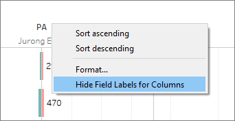

Take-Home Exercise 1
Task Objective:
To display the demographic structure of Singapore at the Planning Area Level by using the age-sex pyramid method that is on a single view (Trellis display)
9 Planning areas are to be selected.
Data Source:
- The dataset used for this task is called ‘Singapore Residents by Planning Area/Subzone, Age Group, Sex and Type of Dwelling, June 2022’, for which the CSV version was downloaded from the Department of Statistics, Singapore website.
Basis of selection for the 9 Planning areas:
From initial observation from the dataset, there are several areas that have low population or 0 population. By cross-refering to Singapore’s latest Map of Planning Areas/Subzones in Singapore it is observed that areas like ‘Boon Lay’ contain districts like ‘Tukang’, ‘Liu Fang’ etc which are not residential zones.
Hence, for effective comparison, planning areas with intuitively denser/popular residential zones were selected.
1. Step-by-step Method
Data Preparation
| No. | Description of Step | |
|---|---|---|
| 1 | Load data file
The following columns should be view-able with the corresponding definitions:
|
|
| 2 | Data treatment (‘Sex’ column)
|
Creating the Age-Gender Pyramid in a Trellis View
| No. | Description of Step | |
|---|---|---|
| 1 |
|
 |
| 2 |
|
|
| 3 | Selection of 9 Planning Areas to display
|
|
| 4 | Formatting of the Trellis Chart (Color)
|
|
| 5 | Formatting of the Trellis Chart (sort AG axis)
|
|
| 6 | Formatting of the Trellis Chart (Pyramid effect)
|
|
| 7 | Formatting of the Trellis Chart (Enhance visualization)
|
 |
| 8 | Adding labels to the diagrams
|

2. Observations from the Dashboard
The following trends were observed after plotting the anecdotal more popular residential areas in Singapore.
In general, the most dense area was found to be Sengkang while the least populated zones were Bukit Timah and Hougang. In terms of Male and Female distribution, it was observed that the differences are not noticeable greater over the other in general but totals of Females were generally higher than Males across all 9 planning areas.
Sengkang, an upcoming area for young families
This area was found to have more than 10K average of the general age range from 35 to 49 years old, which supports the hypothesis that many young families are drawn to live in Sengkang. Correspondingly, the number of young children in the age range of 0 to 19 is also significantly higher compare to the other 8 areas.
Hougang as an unexpectedly more mature estate than Ang-Mo Kio and Toa Payoh ?
While both Ang Mo Kio and Toa Payoh are generally referred to as mature estates the less publicized area of Hougang showed that it had a significantly larger number of older generation residents in the age range of 55 to 74. While the caveat here could be due to Hougang having a larger land size in comparison to Ang Mo Kio and Toa Payoh, a theory behind this could also be due to the lesser amount of development works in Hougang that could have reduced population shifts (or households moving), resulting in many of these older generation to continue staying within the neighborhood.
Bukit Timah as a richer residential area
The data also shows clearly how Bukit Timah has one of the lower populations compared to the rest of the planning areas. This is also not a surprise given that this area is known to be home to a large proportion of landed properties and low-lying areas, which are larger in size compared to HDBs and is hence less densely populated than other areas.